Called — Brand Identity
The mark is a near-closed arc with a solid block sealing its opening — a commitment made before the outcome existed. Flat vector source, one stroke, one filled block.
The arc is a C, a chain link, and a timeline. The opening is the moment before
an outcome exists. The block is the commitment that closes it, and one point on a
probability scale. Flat, cut terminals read as records with a timestamp.
Custom letterforms on the same 6-unit stroke as the mark — not Doto set as text, not any
installed typeface. The C is the sealed-arc construction scaled to wordmark
size, so the mark and the name are one idea. Uniform 10-unit optical gaps, mechanical
rhythm, no ligatures.
Mark first, then the wordmark, with the mark optically centred on the wordmark's x-height. Two lockups only. Clearspace equals one cap height on every side.
At 24px and below the stroke thickens from 6 to 8 and the seal block grows to match, so the opening and the block both survive. The variant is selected by size, never by hand.

64 × 64 grid — radius 21 — 44° opening — 6 unit strokeThe bubble diagram is the mark over its construction grid: centre lines, the pitch circle, and the block sealing the 44° opening at three o'clock.
Never round the caps, close the opening, or remove the block — the gap and the block are
the mark. Never rotate, skew, outline, shadow or gradient it. Never rebuild the wordmark by
typing Called in Doto. Never use vermilion on anything but the seal block.
Never add a badge, pill, tagline or container.
currentColor; only the seal
block is painted separately. --seal #ff5a36 is otherwise reserved across the
product for sealed and live data — the identity is its one sanctioned exception.